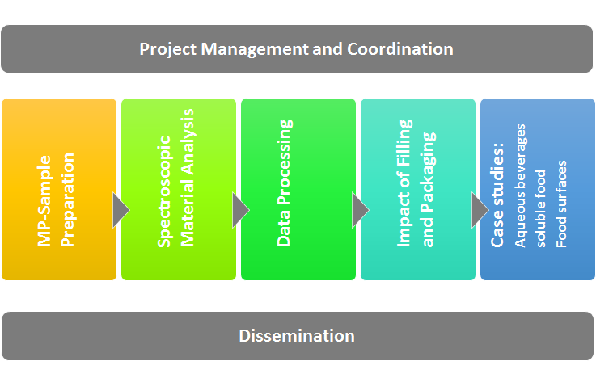

Das Projekt „microplastic@food“ wird in fünf Schritten durchgeführt: Im ersten Schritt (AP 2) wird die Probenaufbereitung und -konzentration optimiert und ein MP-Referenzsystem erstellt. Im nächsten Schritt (AP 3) dienen diese MP-Proben als Grundlage für die Identifizierung und Quantifizierung mit FTIR- und Raman-Mikroskopiemethoden. Alle von den MP-Referenzproben gesammelten Spektren durchlaufen in AP 4 einen automatischen Datenverarbeitungsschritt. Basierend auf der validierten Methode werden in AP 5 Proben aus Abfüll- und Verpackungsanlagen auf MP untersucht (z.B. Identifizierung, Quantifizierung), gefolgt von der Analyse von Lebensmittelproben (AP 6) aus Getränken, löslichen Lebensmitteln und Lebensmitteloberflächen. Die Arbeitspakete Projektmanagement (AP 1) und Verbreitung (AP 7) begleiten die Forschungs- und Entwicklungs-Arbeitspakete.
AP1 - Projektmanagement
In diesem Arbeitspaket übernimmt ecoplus gemeinsam mit IVLV die Projektkoordination von der Projektplanung, über die technische und finanzielle Verwaltung bis hin zur Berichtslegung. Zu Projektbeginn wird gemeinsam mit den Forschungspartnern der Konsortialvertrag aufgesetzt und die Intellectuell Property Regeln (IPR) verhandelt. Während der Projektlaufzeit werden die Treffen des Lenkungsausschusses organisiert und an die beteiligten Unternehmenspartnern die Projektfortschritte kommuniziert bzw. die Zwischenergebnisse diskutiert. Im Bereich des Projektcontrollings wird auf die zeitgerechte Erreichung der Meilenste ile geachtet und – falls erforderlich – Korrekturmaßnahmen im Arbeitsplan festgelegt.
AP2 - Vorbereitung Mikroplastik Referenzmaterial
Im ersten Schritt werden MP-Referenzproben (Zusammensetzung bekannt d.h. die wichtigsten Verpackungskunststoffe u.a. PP, PE, PVC, PU, PET, PS, ABS, PA, PC, PMMA, PAN, PLA, PMDS, PVPP sowie Kunststofffasern wie PET, PAN) in drei Größenklassen hergestellt - 1000-50 µm, 50-10 µm, 10-1 µm für die Entwicklung und Kalibrierung spektroskopischer Methoden, für Laborvergleiche und die Entwicklung automatisierter Datenanalyse-Werkzeuge (-> AP 3 und AP 4). Weiters wird für die Probennahme in Abfüll- und Verpackungsanlagen sowie an der Produktionslinie und in der Umgebungsluft (-> AP 5) ein allgemeines Probennahmeprotokoll (SOP) erstellt. In einem weiteren Vorbereitungsschritt wird eine SOP für die Probenvorbereitung, Reinigung und Konzentrationsverfahren für die Produktgruppen: Wasser und filtrierte Getränke, Milch und flüssige Milchprodukte, lösliche Lebensmittel (z.B. Salz, Zucker) und Oberflächen von verpackten Lebensmitteln (Spülflüssigkeit) für die spektroskopische Analyse (Raman & FTIR) erstellt (-> AP 6).
AP3 - Spektroskopische Materialanalyse
Im ersten Schritt werden analytische Methoden auf der Grundlage der Schwingungsspektroskopie (IR- und Raman-Mikroskopie) etabliert zum Nachweis und zur Identifizierung von MP (angereichert auf speziellen Filtern (-> AP 2). Dazu sind (a) SOPs zur Abbildung, Identifizierung und Quantifizierung von MP zu implementieren und zu validieren sowie (b) bestehende Spektraldatenbanken für Proben innerhalb dieses Projekts zu erstellen und zu ergänzen und (c) eine praktische Nachweisgrenze zur Bestimmung von MP-Partikeln für die Hochdurchsatzanalyse und für die verschiedenen Probentypen innerhalb dieses Projekts zu definieren (Richtlinien). Weiters werden qualitative und quantitative Bestimmung von MP-Partikeln an Referenzproben durchgeführt und Vergleich der verschiedenen analytischen Ansätze gezogen. Entscheidung darüber, (i) welcher analytische Ansatz für welchen Probentyp (Wasser, Getränke, Lebensmittel, etc.) am besten geeignet ist und (ii) welcher Ansatz für spezifische Anforderungen einfacher, zuverlässiger und vor allem schneller ist.
AP4 - Computergestützte Identifizierung von Mikroplastik (Automation)
Die gesammelten FTIR und Raman Spektren der Referenzproben - der wichtigsten Polymere, wie sie in AP 2 vorbereitet und in AP 3 gemessen wurden, werden mit automatischen Datenverarbeitungsalgorithmen der Purency Software verarbeitet. Nach einer ersten Kalibrierungs- und Testphase werden die Spektraldaten der Referenzproben einschließlich Etablierung eines validierten Ansatzes für die computergestützte Visualisierung (Größe, Form), Zählung und Identifizierung (Datenverarbeitung) von MP-Partikeln für einzelne Polymertypen (alle analytischen Methoden) vorbereitet. Die Resultate der KI werden durch visuelle Kontrollen verifiziert und sowohl die Identifizierung als auch die Quantifizierung der Polymere in Überarbeitungszyklen laufend verbessert.
AP5 - Evaluierung der Verpackungs- und Abfüll-systeme
Von verschiedenen Abfüll- und Verpackungsanlagen werden direkt an den Produktionslinien und in der Umgebungsluft gemäß dem allgemeinen Probennahmeprotokolls, das in WP 2 entwickelt wurde, Proben gezogen. Die Proben werden auf MP-Kontamination untersucht, die auf verschiedenen Stufen in den Verpackungs- und Abfüllanlagen eingetragen werden könnten (z.B. vor und nach der Abfüllung, auf Zwischenstufen der Produktionslinie). So können potenzielle Quellen für den Eintrag und/oder die Erzeugung von MP entlang von Verpackungs- und Abfüllprozessen (Umgebungsluft, Produktionsmittel, Abrieb in Produktionslinien) identifiziert und Maßnahmen zur Vermeidung von MP in Lebensmitteln, Getränken und Verpackung abgeleitet werden.
AP6 - Anwendung in Fallstudien (I) Getränke, (II) lösliche Lebensmittel (Salz, Zucker), (III) komplexe verpackte Lebensmittel, die abgespült werden
Probennahme und Analyse der potenziellen MP-Kontamination von 3 Produktkategorien: Getränke, lösliche Lebensmittel und Lebensmitteloberflächen. Die in WP 2 entwickelte schrittweise SOP-Beschreibung des Probenvorbereitungsverfahrens für wässrige Proben (Mineralwasser, Spüllösungen, Lösungen von gelösten Pulvern) wird angewandt.
Fallstudie I Wasser, Bier, Milch und gefilterte Getränke:
Im Rahmen dieser Aufgabe werden Proben von Mineral- und Quellwasser, Milch und gefilterten Getränken wie z.B. Säfte auf MP-Kontamination untersucht. Proben der beteiligten Projektpartner (anonymisiert) werden analysiert und die Wirkung der verschiedenen störende Getränkematrices werden entfernt, da sich Milchfett- oder Zuckerkontaminationen negativ auf die Messbarkeit MP auswirken und die spektroskopische Probenidentifikation erschweren. Die Ergebnisse der qualitativen und quantitativen Analyse sowie mögliche Vermeidungsmaßnahmen zur Reduzierung möglicher MP-Kontaminationen werden mit dem jeweiligen Kunden diskutiert.
Fallstudie II lösliche Lebensmittel:
Verschiedene Arten von wasserlöslichen Lebensmitteln (Salz, Zucker, ...) sind das Ziel der zweiten Fallstudie. Lösungen der Produkte der teilnehmenden Partner werden beprobt und auf potenzielle MP-Kontamination analysiert. Die in WP 2 entwickelte schrittweise SOP-Beschreibung des Probenvorbereitungsverfahrens für wässrige Proben (Mineralwasser, Spüllösungen, Lösungen gelöster Pulver) wird angewendet.
Fallstudie III Lebensmitteloberflächen:
MP kann auch auf verschiedenen Arten von verpackten Lebensmitteln (z.B. Käseblöcken oder Wurst) gefunden werden, die durch eine MP-Kontamination in der Verpackungslinie verursacht wurden. Daher sind die Lebensmitteloberflächen die Zielbereiche, die gespült und das Eluat analysiert werden müssen. Die Produkte der teilnehmenden Projektpartner werden nach dem Auspacken gespült, gefiltert und auf eine mögliche MP-Kontamination analysiert.
Um Rückschlüsse auf die potentiellen MP-Kontaminationsquellen zu ziehen und mögliche Lösungen zur Reduzierung der MP-Kontaminationen zu finden, werden individuelle Gespräche mit den jeweiligen Kunden geführt.
AP7 - Dissemination
Im Arbeitspaket 7 werden die Ergebnisse des Projektes der interessierten Öffentlichkeit zugängig gemacht einerseits über die Website aber auch über wissenschaftliche Vorträge („Österr. Verpackungstag“) und Publikationen (z.B. „Environmental Science & Technology”, „Analytical Method”, „Applied Spectroscopy”). Ein weiteres Ziel ist die Erstellung und Veröffentlichung eines Katalogs mit Gegenmaßnahmen zur Reduzierung von MP in Lebensmitteln und Lebensmittelverpackungen sowie Abfüllanlagen. Ganz wesentlich ist die kontinuierliche Mitarbeit in Normungsgremien wie Austrian Standards International (ASI), Komitee ON-AG 074 09 und der Internationalen Organisation für Normung (ISO), Komitee ISO/TC 61/SC 14/WG 4, um einen bidirektionalen Wissenstransfer zu ermöglichen und zum Harmonisierungsprozess von MP-Messansätzen beizutragen.